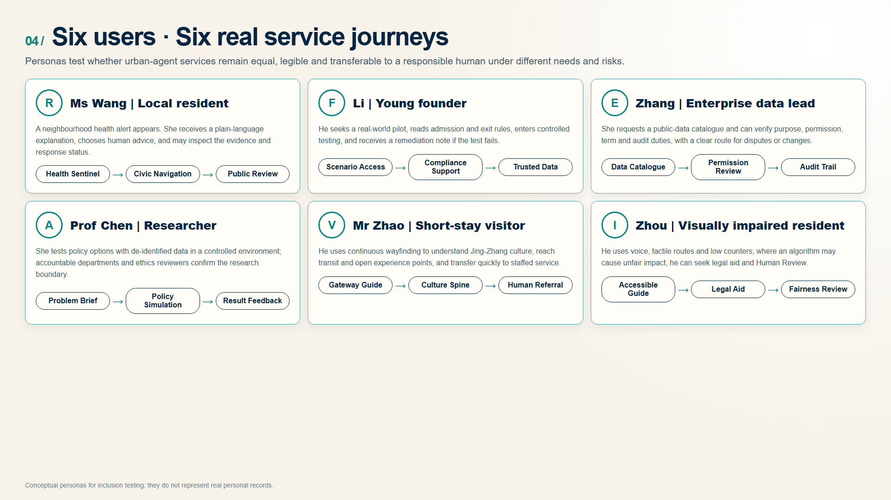
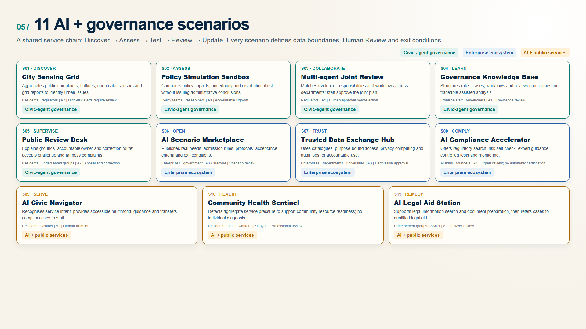
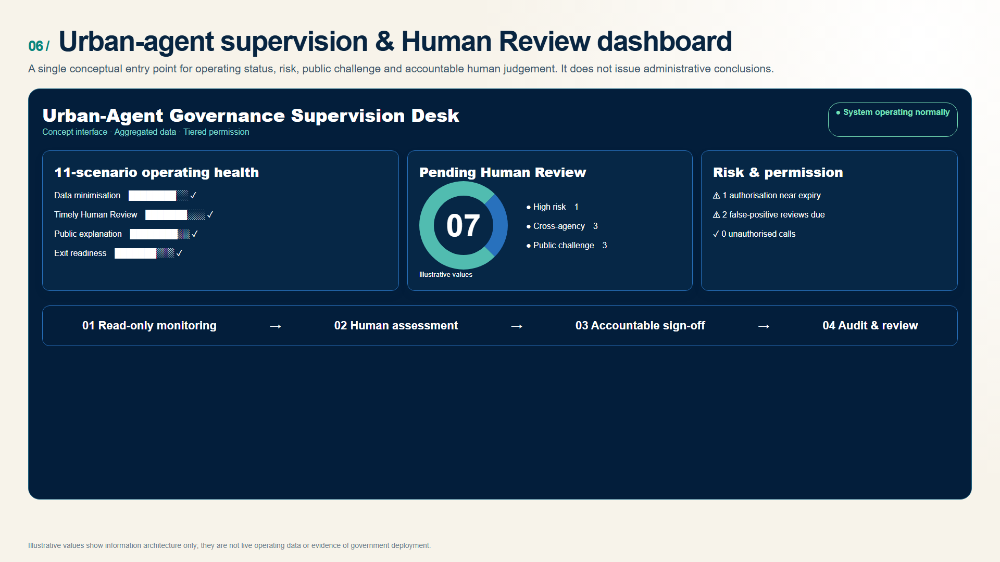

CivicMind Jing-Zhang | Urban-Agent Governance Infrastructure That Is Visible, Legible, Supervisable and Correctable
For urban agents: translating mature public-service coordination methods into visible, legible, supervisable and correctable AI governance infrastructure.
CivicMind Jing-Zhang — A Living Lab for AI Urban Governance
Governance as infrastructure: every urban AI scenario needs rules, accountable owners, Human Review, exit conditions, and a public return.
Strategic Overview

Figure: the governance spine, three functional hubs and the blue-green public realm. Boundaries, scale, architecture and delivery conditions require formal planning and professional development. Responding to the shift from isolated AI applications to citywide systems, CivicMind proposes a living lab that is perceivable, testable, governable and transferable. It relies on the Jing-Zhang Railway Heritage Park, existing innovation assets and public-service networks rather than large-scale new construction. A governance spine connects three functional hubs, two enablement wings and distributed scenario nodes. Its operating loop moves from problem discovery to joint assessment, controlled testing, public review and evidence-based scaling.
Design Basis and Source List
The proposal starts with a civic question: as AI enters mobility, neighbourhood services, enterprise operations and public decisions, what must a city provide beyond computing power and offices? It proposes an infrastructure of rules that people can see, understand, challenge and correct. Publicly documented government-service workflows provide a practical point of departure, but do not imply that any existing system or dataset is deployed in Jing-Zhang Source Source Depth. The current spatial extents support conceptual relationships only; formal boundaries and controls remain pending Source Standard.
Evidence Hierarchy and Applicability
| Level | Principal sources | Role in this proposal | Boundary of use |
|---|---|---|---|
| Direct project basis | Official announcement, Agent taskbook, site package and source registry | Define scope, tasks, deliverable depth, review dimensions and treatment of missing data | Provisional geometry is not an official redline; missing statutory controls are not inferred |
| Domestic spatial-planning basis | MOHURD urban-design and regulatory-planning measures; MNR land-use classification guide | Check spatial structure, land-use coding, design depth and the wording of planning claims | The proposal does not replace statutory planning, specialist studies, engineering design or approval |
| Domestic governance and rights basis | Personal Information Protection Law, Data Security Law, Barrier-Free Environment Law and Interim Measures for Generative AI Services | Check data minimisation, purpose limitation, Human Review, remedy, accessibility and service boundaries | Applicability to each pilot requires review by accountable authorities and qualified legal professionals |
| International methodological references | OECD AI Principles, EU AI Act and IMDA AI Verify | Inform risk tiers, transparency, testing and accountability methods | Method references only; they neither replace Chinese law nor prove equivalent local institutions |
Urban agents therefore remain bounded support systems for aggregation, assisted analysis, workflow guidance and operational monitoring. Decisions that affect rights, resource allocation, administrative action or high-risk warnings require Human Review, accountable sign-off, audit trails and routes for challenge and correction. Policy sources constrain design claims; they do not create approval, funding or implementation commitments.

Three-Level Scope Framework

The 43.6 km² Coordinated Research Area frames regional and industry collaboration; the announced 11.4 km² Overall Design Area organises public space and infrastructure; and the announced 368.4 ha Key-Area Detailed Design Area turns governance mechanisms into three tangible prototypes Spatial data Metric Depth. These scales work as one chain. Current polygons remain provisional and will be recalibrated when formal boundaries arrive.
Coordinated Research Area: Industry and Future City Research
“One body, two wings, three layers” connects the heritage governance spine, Zhongzhiyuan decision layer, AI Origin sensing/interaction layer, Dazhongsi industry-support layer, Xiaoyue River testing wing, and Zhongguancun standards/services wing Source Standard Depth. The original identity combines rail lines, a governance loop, indigo trust, green openness, and gold Human Review.
Seven precedents remain distinct from proposed mechanisms: Singapore AI Verify, the EU AI Act, Shenzhen Data Exchange, OECD AI Principles, Estonia e-Governance, Hangzhou City Brain, and Barcelona DECODE. They inform testing, risk tiers, trusted exchange, accountability, cross-agency coordination, and citizen data control; they do not prove local implementation Source Source Source.

Overall Design Area: Urban Renewal and Regulatory-Plan-Level Urban Design

Figure: reuse, reversible additions, continuous walking, rain gardens and staffed public service. It does not determine demolition, retention or construction on any parcel. The spatial framework is a governance spine, three functional layers, two feedback wings, and a public-review loop. Reversible service interfaces reuse existing space where feasible Spatial data Standard Depth. FAR, height, coverage, statutory green ratio, setbacks, ownership, existing buildings, and utility capacity remain unknown Metric Depth.
Detailed Design of Key Areas


Zhongzhiyuan is the decision layer, with conceptual knowledge, simulation, compliance-support, and multi-agent spaces Spatial data. Beijing AI Origin is the sensing/interaction layer with public review, accessible navigation, and co-creation Spatial data. Dazhongsi is the industry-support layer with trusted data, scenario access, and legal-service referral Spatial data Depth. Buildings, bridges, and transport moves require professional development.
AI Innovation Ecosystem, Personas, and AI+ Scenarios

Figure: service journeys for older residents, visually impaired people, founders, enterprise staff, researchers and visitors. The people shown are design personas, not real personal profiles. Six design personas cover an older resident, young founder, enterprise data lead, university researcher, visitor, and visually impaired resident. They are design tools, not personal profiles Standard Depth. Eleven readable cards cover sensing, policy simulation, multi-agent collaboration, governance knowledge, public review, scenario access, trusted data exchange, compliance support, civic navigation, community health, and legal-aid referral. Every scenario states data limits, accountable operations, Human Review, and exit conditions Spatial data Source.


Land Use, Building Scale, and Retain-Renovate-Demolish Strategy
Land use is a complete non-overlapping conceptual partition using national codes. Building footprints are design placeholders, not existing-building, ownership, or demolition evidence Standard Spatial data Metric. Statutory controls remain unknown Depth Depth.
Transport, Rail, Municipal Infrastructure, and Public Services
The conceptual Walking and Cycling Network links the three layers with transit information, accessibility, bicycle parking, and event-day dispersal, without claiming road redlines or engineering feasibility Spatial data Standard Depth. Public services retain voice, large-text, tactile, low-counter, human, and non-digital options where applicable.

Blue-Green Network, Public Space, and Urban Character

Figure: conceptual reference imagery for transparent governance, proportionate sensing and trusted exchange; it is neither approved construction nor a determined engineering scheme. The Jing-Zhang Railway Heritage Park is the governance spine; Qinghe and Xiaoyue River links remain conceptual because official blue lines are unavailable Spatial data Spatial data Depth. Three conceptual pilgrimage landmarks—Governance Loop, Sensing Eye, and Trust Bridge—explain accountability, sensing limits, and data permissions. The narrative moves “from connecting cities to connecting governance,” without fictional history or unlicensed portraits.
Renewal Projects, Implementation Policy, and Phasing
Conceptual phases are 0–6 month reversible pilots, 6–18 month controlled validation, and 18–36 month conditional scaling only after evidence, formal planning, and accountable owners are in place Spatial data Depth Depth. Proposed activities include a governance summit, compliance camp, scenario open day, public review assembly, multi-agent challenge, and open-source week. None is a confirmed government schedule.
Implementation accountability should identify the lead, operator, approver, supervisor and exit authority for scenario admission, controlled testing, public service, stage evaluation and conditional scaling. Pilot metrics may cover audit-log completeness, Human Review, public-response closure and corrective-action completion; final definitions require approval by accountable bodies before a pilot starts.

Metrics, Area Recalculation, and Compliance Matrix
Geometry-derived design quantities are calculated in EPSG:4548; announced areas remain separate references. Statutory green and public-space controls remain unknown Metric Metric Depth. Eleven scenarios, six personas, and three landmarks describe proposal content, not implementation scale.

Risk, Copyright, and Compliance

Spatial-experience figures were produced with the OpenAI image generation model and are labelled as conceptual renderings. Evidence figures for boundaries, area, mobility and metrics remain data-derived; generated imagery is not used as survey or statutory planning evidence. The eight-dimension matrix covers privacy, complexity, acceptance, operations, policy uncertainty, spatial disputes, maturity, and inclusion. No private/internal data is used; AI does not replace statutory duties; provisional geometry, landmarks, events, procurement, funding, and timing are not official decisions Source Standard Depth. All spatial moves are Conceptual Recommendations for professional development, not approvals, legal opinions, engineering conclusions, investment commitments, or implementation arrangements.
References
1. Haidian Branch of the Beijing Municipal Commission of Planning and Natural Resources, official open-call announcement, 2026. 2. Rights-cleared Agent open-call taskbook, 2026. 3. MOHURD urban-design and regulatory-planning measures; MNR land-use classification guide. 4. Personal Information Protection Law; Data Security Law; Barrier-Free Environment Law; Interim Measures for Generative AI Services. 5. Official/project sources for AI Verify, EU AI Act, OECD AI Principles, e-Estonia, Shenzhen Data Exchange, Hangzhou City Brain, and Barcelona DECODE. International frameworks are methodological references only and do not replace applicable Chinese law.